Chapter Overview
Chapter 10 examines how religion changes and persists in contemporary society. It connects demography, immigration, globalization, secularization, pluralism, legal protections, and interfaith work to the realities of religious life in Canada and the wider world.
This chapter is best studied as a framework for interpreting change. Rather than asking only whether religion is growing or shrinking, students track how data, law, media, prejudice, accommodation, and dialogue shape coexistence in the new millennium.
Learning Outcomes
- Explain why religion still matters in the twenty-first century and how diversity changes public life.
- Use demography, census data, trends, and limitations accurately when describing religious change.
- Describe how immigration, globalization, and new media reshape Canada's religious landscape.
- Explain secularization, consumerism, and humanism without assuming religion simply disappears.
- Distinguish fundamentalism from extremism and explain why prejudice and stereotyping damage coexistence.
- Compare tolerance, pluralism, freedom of religion, and reasonable accommodation as tools for living with difference.
- Describe interfaith dialogue and ecumenism using Canadian and global examples.
- Use reliable sources to interpret a Canadian demographic snapshot or interfaith example and produce a basic bibliography.
Chapter Sections
- Religion in the New Millennium
- Diversity and Rapid Change
- Demography and the Census
- Immigration and Canada's Religious Landscape
- Globalization and New Media
- Secularization, Consumerism, and Humanism
- Fundamentalism and Extremism
- Prejudice and Stereotyping
- From Tolerance to Religious Pluralism
- Freedom of Religion
- Reasonable Accommodation
- Interfaith Dialogue and Ecumenism
- Applying the Frameworks to Canada
- The Cohesion Ecosystem
- The Future of Religion in the New Millennium
- Researching Modern Religious Dynamics Responsibly
- Chapter 10 Glossary
Chapter 10 Core Ideas
| Idea | Meaning |
|---|---|
| Ongoing relevance | Religion remains part of modern life because people continue to seek meaning, identity, ethics, and belonging. |
| Data literacy | Demography, census work, percentages, and trends help explain religious change more accurately than anecdote alone. |
| Drivers of change | Immigration, globalization, media, secularization, and consumer culture all reshape religious life in the new millennium. |
| Social friction | Prejudice, stereotyping, misinformation, fundamentalism, and extremism can weaken coexistence when left unchallenged. |
| Pluralism tools | Tolerance, pluralism, and accommodation help diverse societies live with real differences instead of erasing them. |
| Legal protection | Freedom of religion and freedom of conscience protect both religious and nonreligious communities in public life. |
| Dialogue | Interfaith dialogue and ecumenism build understanding, trust, and shared civic cooperation without denying difference. |
| Responsible research | Strong work connects evidence to concepts, names limitations, and avoids stereotypes about religious communities. |
Chapter 10 Knowledge Map
| Area | What it includes |
|---|---|
| Big picture | Religion continues to matter because people seek meaning, identity, moral direction, community, and belonging. |
| Data tools | Demography, census information, surveys, percentages, categories, trends, and limitations. |
| Forces of change | Immigration, globalization, new media, secularization, consumerism, and humanism. |
| Social friction | Prejudice, stereotyping, discrimination, fundamentalism, extremism, misinformation, and social fracture. |
| Cohesion tools | Religious freedom, reasonable accommodation, tolerance, pluralism, interfaith dialogue, and ecumenism. |
| Canadian application | Canadian demographic snapshots, interfaith examples, multicultural public life, and responsible source use. |
1. Religion in the New Millennium
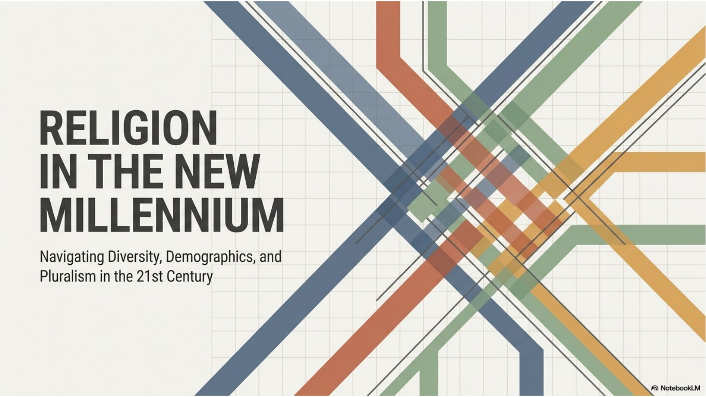
Religion did not disappear when technology, science, global travel, and digital media expanded. Many people still look to religion, spirituality, ethics, or nonreligious worldviews for meaning, identity, moral direction, and community. Chapter 10 studies religion as something that continues to change rather than something frozen in the past.
Canada is an important setting for this discussion because it is multicultural, multi-religious, and legally committed to freedom of conscience and religion. Religious life in Canada includes long-established communities, newer immigrant communities, Indigenous spiritual traditions, Christian denominations, non-Christian traditions, and people who identify with no religion.
The central question is not simply whether religion will survive. The better question is how diverse societies will manage religious difference. The new millennium requires data, respectful dialogue, legal protection, and the ability to challenge prejudice without erasing real differences between communities.
2. Diversity and Rapid Change
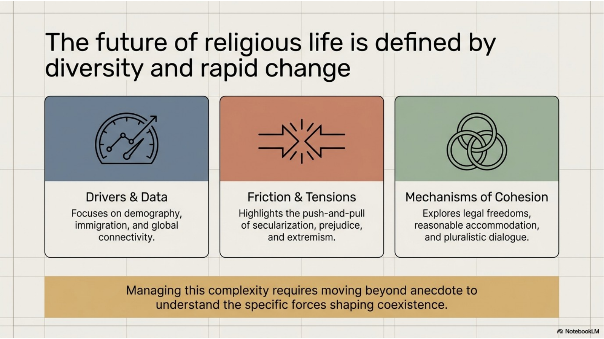
Modern religious life is shaped by several forces at once. Demographic change shows who lives in a society and how the population is shifting. Immigration brings new communities, traditions, houses of worship, festivals, and public religious identities into contact with one another. Global connectivity makes religious information and conflict move quickly across borders.
These changes create opportunity and pressure. Diversity can enrich public life, expand knowledge, and build cooperation. It can also expose prejudice, fear, stereotypes, and conflicts over public space, law, education, dress, symbols, or ritual practice.
A society that wants to manage diversity well cannot rely on guesses or anecdotes. It needs evidence about population change, legal protections for conscience and religion, reasonable accommodation when possible, and respectful dialogue across traditions.
3. Demography and the Census
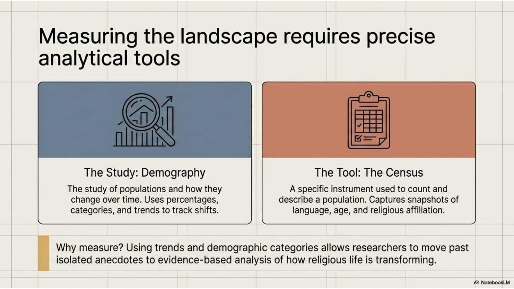
Demography is the study of populations and how they change over time. Demographers use information such as age, gender, location, language, family structure, income, immigration patterns, and religious affiliation to identify patterns in society. This information helps researchers understand how religious life is changing rather than relying only on personal impressions.
A census is a tool used to count and describe a population. It gives researchers a snapshot of who lives in a country, province, city, or region at a particular time. Census information can help show changes in religious affiliation, the growth of minority communities, regional differences, and the number of people who claim no religious affiliation.
Researchers use percentages, trends, categories, and comparisons because raw numbers alone can mislead. A percentage can show the proportion of a group within a population. A trend can show movement over time. Categories help organize complex data. Good demographic research also admits limitations, such as self-reporting, changing categories, sampling, and the fact that a census captures only a moment in time.
4. Immigration and Canada's Religious Landscape
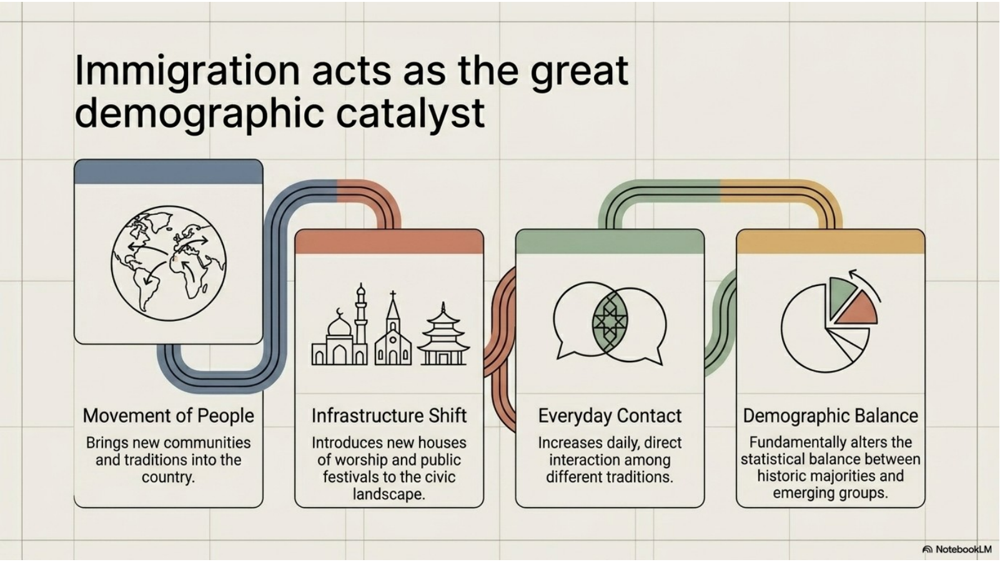
Immigration is one of the major reasons Canada has become religiously diverse. When people move, they do not bring only labour, language, and family history. They also bring beliefs, rituals, sacred calendars, food practices, ethical commitments, and ways of forming community.
Immigration can change the visible landscape of a country. New or growing communities may establish mosques, gurdwaras, temples, churches, synagogues, meditation centres, community schools, festivals, charities, and public service projects. These institutions make religion visible in neighbourhoods and civic life.
Immigration also increases everyday contact among traditions. Students, coworkers, neighbours, and families encounter different holy days, dietary practices, clothing, symbols, and worship schedules. This contact can build understanding, but it can also create tension if people lack accurate knowledge or if stereotypes shape public attitudes.
5. Globalization and New Media
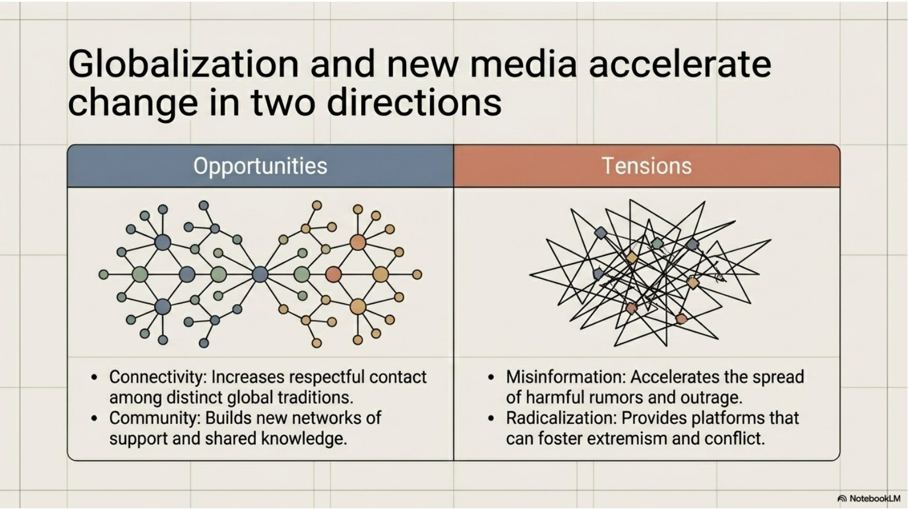
Globalization means that people, goods, ideas, images, conflicts, and communities are connected across borders. Religion is part of this movement. A person can learn from teachers in another country, participate in online worship, follow global religious news, or stay connected to a diaspora community through digital platforms.
New media can create opportunities for religion. It can spread knowledge, connect isolated believers, support interfaith learning, make sacred texts and teachings more accessible, and help communities organize service or advocacy. It can also help minority communities explain themselves directly rather than relying on stereotypes.
The same tools can create serious tensions. Misinformation, hostile rumours, algorithm-driven outrage, online harassment, radicalization, and distorted images of religious groups can spread quickly. A responsible student of religion must ask whether a source is reliable, whether it represents a community fairly, and whether it encourages understanding or fear.
6. Secularization, Consumerism, and Humanism
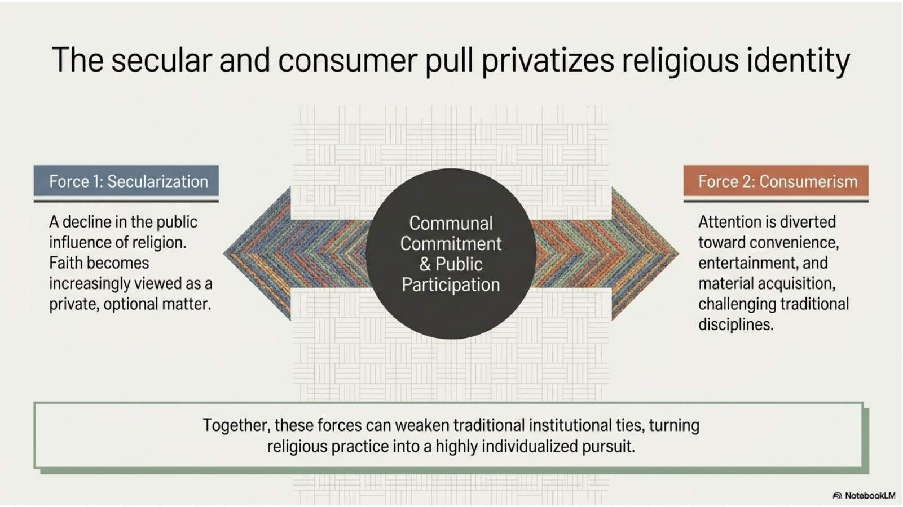
Secularization refers to a decline in the public influence, authority, or participation of religion in some parts of society. It does not mean that religion automatically disappears. Instead, religion may become more private, optional, individualized, or separated from public institutions. Some people still believe deeply, while others participate less often or identify with no religion.
Consumerism is another pressure. When people are constantly pulled toward entertainment, convenience, personal choice, and material acquisition, religious commitments can seem less central. Practices that require discipline, worship, sacrifice, service, or community responsibility may be weakened when people treat identity mainly as a private lifestyle choice.
Humanism shows that the search for ethics can also occur outside formal religion. Humanism emphasizes human welfare, dignity, reason, and responsibility. Many humanists do not base moral life on belief in God, an eternal soul, or an afterlife. Even so, humanists and religious communities may share concerns about justice, human rights, equality, racism, environmental care, and the desire to make society better.
7. Fundamentalism and Extremism
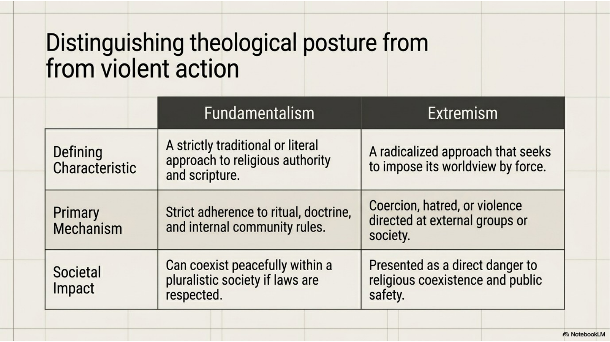
Fundamentalism usually refers to a strict, highly traditional, or literal approach to religious teaching. Fundamentalists often emphasize sacred texts, traditional practices, moral boundaries, and preservation of community identity. A fundamentalist group may resist change because it fears that adaptation will weaken the faith.
Extremism goes further. Religious extremism involves radicalized belief that may justify coercion, hatred, violence, or force against people seen as enemies. Extremists may try to impose their worldview on others or use political power, fear, or violence to silence difference.
The distinction is essential. A strict or traditional religious community is not automatically violent or dangerous. Many can live peacefully within a pluralistic society when they respect law and the rights of others. Extremism becomes a danger when it attacks public safety, human dignity, and the possibility of coexistence.
8. Prejudice and Stereotyping
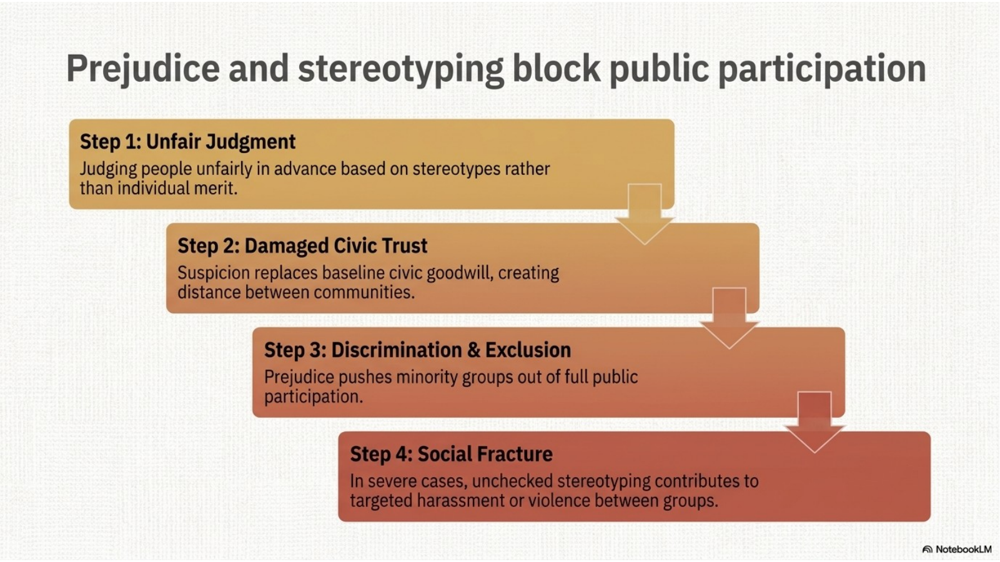
Prejudice means judging people unfairly in advance. In religious life, prejudice often begins with stereotypes: simplified assumptions about a group based on clothing, worship, symbols, ethnicity, language, or media images. These assumptions make it harder to see individuals and communities accurately.
Prejudice damages civic trust. When people assume that another religious group is threatening, backward, strange, violent, or less Canadian, distance replaces goodwill. Minority communities may feel watched, mocked, excluded, or pressured to hide their identity.
The consequences can become serious. Prejudice can lead to discrimination in schools, workplaces, public services, and neighbourhoods. In extreme cases, unchecked stereotyping contributes to harassment, hate crimes, and violence. A pluralistic society must challenge prejudice because coexistence cannot survive when groups are treated as permanent targets of suspicion.
9. From Tolerance to Religious Pluralism
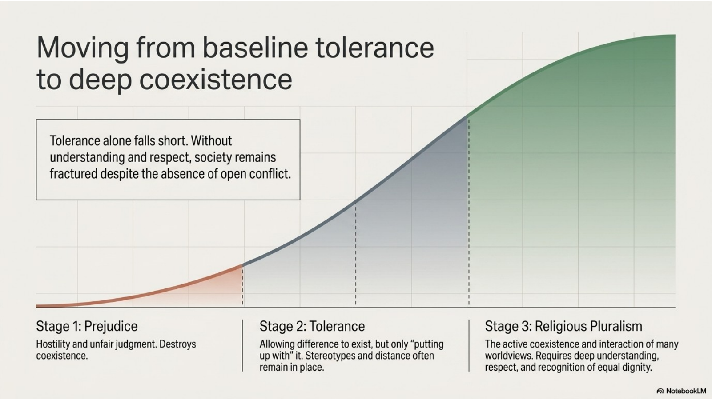
Tolerance means allowing difference to exist. It is better than open hostility because it reduces direct conflict. However, tolerance can still be weak if it only means putting up with people while keeping stereotypes, distance, and suspicion in place.
Religious pluralism goes further. Pluralism means the active coexistence and interaction of many religious traditions and worldviews in the same society. It does not mean that all religions are identical, that differences do not matter, or that people must give up their convictions. It means differences are engaged respectfully rather than ignored or attacked.
In Canada, pluralism is connected to multiculturalism, immigration, religious freedom, and everyday civic life. A pluralistic society needs accurate knowledge, respectful dialogue, fair institutions, and a willingness to recognize the equal dignity of people whose beliefs and practices differ from one's own.
10. Freedom of Religion
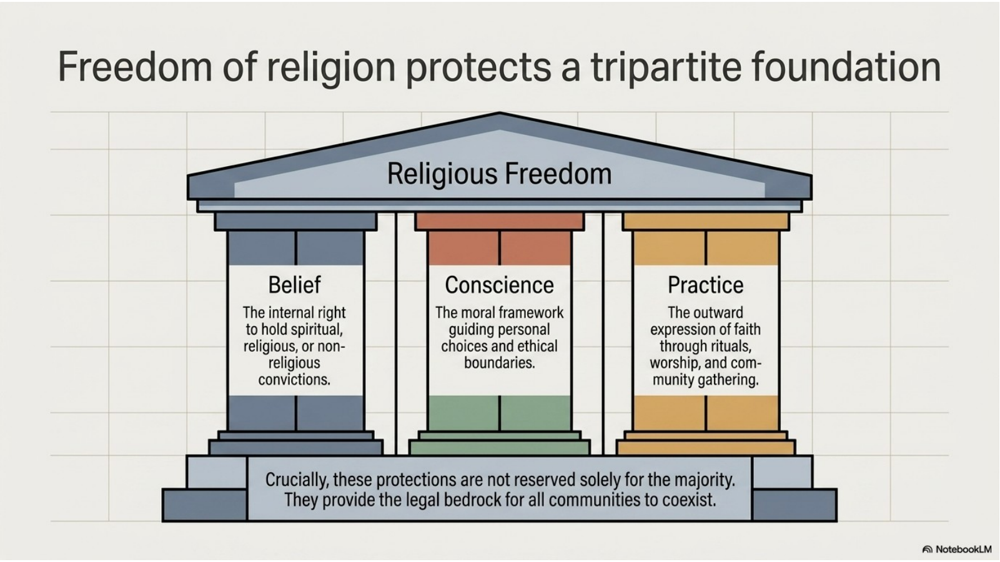
Freedom of religion is a foundation for religious coexistence. It protects the internal right to hold religious, spiritual, or nonreligious convictions. It also protects conscience, meaning the moral framework people use to make ethical decisions. A society cannot be genuinely pluralistic if people are punished simply for holding different beliefs.
Religious freedom also protects outward practice. People express faith through worship, rituals, clothing, dietary patterns, sacred calendars, prayer, community gatherings, service, and education. These practices make religion visible in public life, which is why religious freedom cannot be reduced to private opinion only.
This protection is not only for the majority. It matters especially for minority communities and unpopular viewpoints. At the same time, religious freedom exists alongside the rights and safety of others. That is why societies need careful legal and institutional judgment when different rights or responsibilities come into tension.
11. Reasonable Accommodation
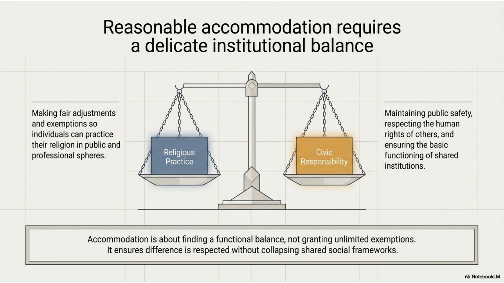
Reasonable accommodation means adjusting rules or practices so people can participate while still respecting their religious commitments. Examples may include scheduling flexibility for holy days, space for prayer, respect for religious clothing, dietary options, or careful handling of sacred obligations in schools and workplaces.
Accommodation is not the same as giving unlimited exemptions. It requires balance. Institutions must consider religious freedom and human dignity, but they must also consider public safety, the rights of others, fairness, professional responsibilities, and the basic functioning of shared spaces.
This balance is why the word reasonable matters. A fair society should not force unnecessary barriers on religious communities, but it also cannot allow one person's practice to erase everyone else's rights or safety. Accommodation works best when people explain needs clearly, listen carefully, and search for practical solutions.
12. Interfaith Dialogue and Ecumenism
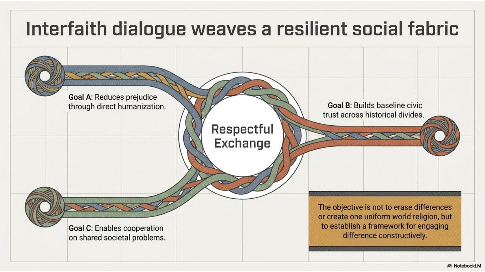
Interfaith dialogue is respectful exchange among people from different religious traditions. Its goal is not to erase difference or force agreement. Its goal is to build understanding, reduce prejudice, create trust, and allow communities to cooperate on shared concerns such as poverty, peace, racism, environmental care, and public safety.
Ecumenism is a related but more specific term. It refers to movements within Christianity that seek cooperation and unity among Christian denominations. Interfaith dialogue is broader because it reaches across different religions and worldviews, not only within one religious family.
The World's Parliament of Religions is an important historical example of interfaith engagement. Its meetings brought representatives of different religious traditions together to discuss mutual understanding, tolerance, and important global issues. Canadian examples of interfaith work can include local interfaith councils, multi-faith service projects, visits to houses of worship, and educational events involving several traditions.
13. Applying the Frameworks to Canada
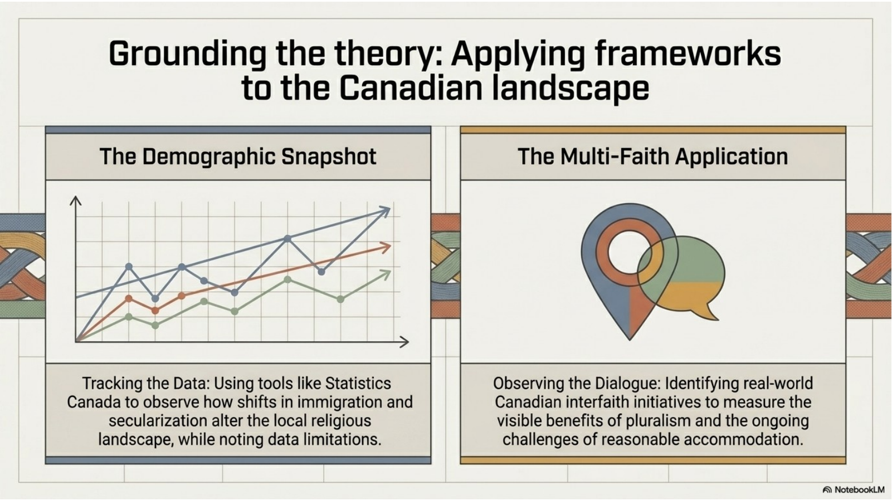
A demographic snapshot uses evidence to describe a pattern in the population. For example, a student might examine religious affiliation in a province, the growth of people reporting no religion, changes in a city after immigration, or differences between age groups. Strong demographic work names the data source, summarizes the numbers clearly, and explains what the trend suggests.
A multi-faith or interfaith application studies a real-world example of cooperation or dialogue. This could include a local interfaith event, a school visit program, a multi-faith food drive, a community peace walk, a shared environmental project, or an organization that helps different religious communities learn from each other.
Both approaches require caution. Data without interpretation becomes a list of numbers. Interfaith examples without detail become vague praise. Strong work connects evidence to larger concepts: pluralism, immigration, religious freedom, accommodation, prejudice, dialogue, secularization, and social change.
14. The Cohesion Ecosystem
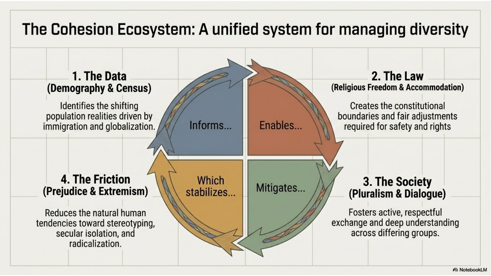
The chapter's concepts work best as a system. Demography and the census help identify changing population realities. Immigration and globalization explain why those realities are shifting. Religious freedom and reasonable accommodation create legal and institutional space for people to practise their beliefs. Pluralism and interfaith dialogue build social trust.
This system also has to respond to friction. Prejudice, stereotyping, secular isolation, misinformation, fundamentalism, and extremism can weaken coexistence. Ignoring these problems does not make them disappear. A society must be able to name them honestly while also avoiding unfair generalizations about whole religious communities.
The goal is not a society with no differences. The goal is a society where differences can be lived openly, debated respectfully, protected fairly, and connected to shared responsibility. In that sense, diversity management is not only a government task. It is also a classroom, family, workplace, media, and community task.
15. The Future of Religion in the New Millennium
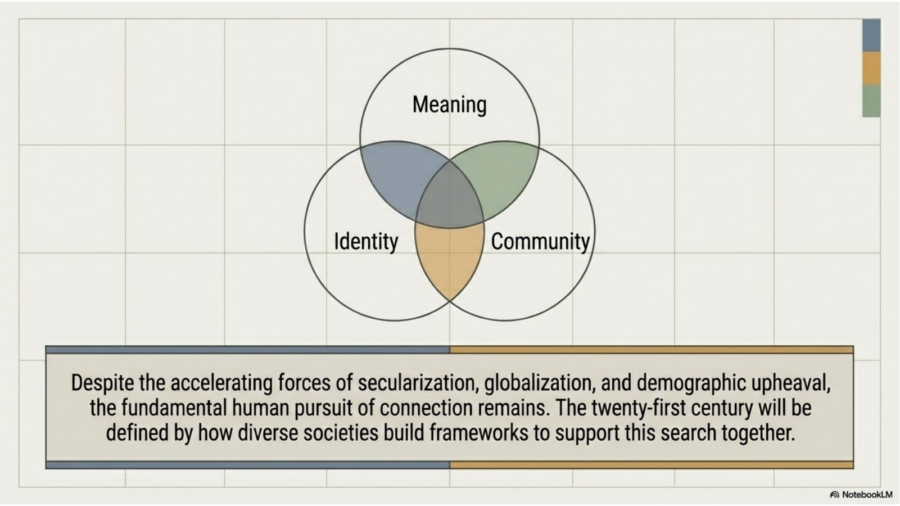
The future of religion in Canada is unlikely to move in only one direction. Some people may become less connected to formal religion. Some communities may grow through immigration, birth rates, conversion, or stronger institutional life. Some people may mix cultural identity, spirituality, ethics, and nonreligious worldviews in new ways.
Religion will likely continue to matter because people continue to seek meaning, identity, community, moral direction, and ways to respond to suffering and injustice. Even when formal religious participation declines in some settings, questions of purpose, dignity, death, hope, ethics, and belonging do not disappear.
The strongest prediction is that diversity and change will continue. This means Canada will need better religious literacy, stronger habits of respectful dialogue, careful use of demographic data, legal protection for freedom of conscience and religion, and honest responses to prejudice and extremism.
16. Researching Modern Religious Dynamics Responsibly
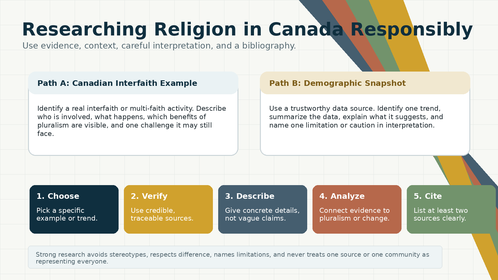
For a Canadian interfaith example, choose one specific real activity or organization. Identify the example, where it happens, who participates, and what the activity does. Then explain which benefits of pluralism or dialogue are visible, such as reduced prejudice, humanization of other groups, cooperation on shared problems, civic trust, or education across difference.
For a demographic snapshot, choose one specific trend related to religion in Canada. Use a trustworthy source such as Statistics Canada or another reliable database. Identify the trend, summarize the data in clear language, and explain what the pattern suggests about change in Canadian religious life. Do not just list numbers. Interpret them.
Every research answer needs a limitation or caution. For interfaith examples, one event may not solve deep prejudice or represent every community. For demographic data, categories can be imperfect, self-identification can be complex, smaller groups may be hidden by broad categories, and a census captures a snapshot rather than the full meaning of belief or practice.
A bibliography should include at least two credible sources. Strong sources usually have identifiable authorship, institutional responsibility, dates, and clear evidence. Avoid anonymous opinion posts, unsourced social media claims, and material that stereotypes religious communities.
Chapter 10 Glossary
| Term | Meaning |
|---|---|
| Accommodation | A fair adjustment that allows participation while respecting rights, safety, and shared responsibilities. |
| Census | A formal count and description of a population. |
| Consumerism | A lifestyle or social pressure focused on buying, convenience, entertainment, and material acquisition. |
| Demographic category | A grouping used to organize population data, such as age, language, location, or religion. |
| Demographic snapshot | A focused summary of population data at a specific time or across a specific trend. |
| Demographic study | Research that uses population data, categories, trends, and percentages to understand social change. |
| Demography | The study of populations and how they change. |
| Ecumenism | The movement to bring Christian denominations closer together and foster mutual understanding. |
| Extremism | A radical approach that may justify coercion, hatred, violence, or force. |
| Freedom of religion | Protection for belief, conscience, and religious practice. |
| Fundamentalism | Strict maintenance of traditional religious teachings and practices, often with literal interpretation. |
| Globalization | Growing worldwide connection among societies, cultures, economies, and traditions. |
| Humanism | A worldview that emphasizes human dignity, welfare, reason, and responsibility, often outside formal religion. |
| Immigration | The movement of people into a country to live there. |
| Interfaith dialogue | Respectful communication across religious communities in a spirit of understanding and tolerance. |
| Multiculturalism | The presence and recognition of many cultural communities within one society. |
| New media | Digital communication tools such as websites, social media, streaming, messaging, and online platforms. |
| Pluralism | The active coexistence and interaction of many religions or worldviews within a society. |
| Prejudice | Unfair judgment made before knowing people or evidence. |
| Reasonable accommodation | A fair adjustment that allows religious practice where possible while respecting other rights and responsibilities. |
| Religious diversity | The presence of many religious traditions and worldviews in one society. |
| Religious literacy | The ability to understand religious traditions, symbols, practices, and differences accurately. |
| Secularization | A decline in the public influence, authority, or participation of religion in some areas. |
| Stereotype | An oversimplified or inaccurate assumption about a group. |
| Tolerance | Allowing difference to exist, even when deep understanding is limited. |
| Trend | A pattern of change over time. |
| World's Parliament of Religions | A meeting of representatives of world religions focused on mutual understanding, tolerance, and important issues. |